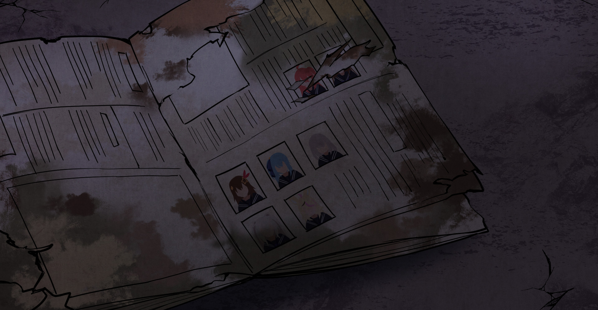

"Attention: Please be advised that this website contains light
patterns that may cause headaches or seizures for some viewers. If
you experience any discomfort, please stop viewing the website and
consult a medical professional. Viewer discretion is advised."
This website is best viewed on Desktop Mode
"Have you ever escaped the rabbit's hole?"
SOUNDSHARE
ABOUT
Hololive is a virtual YouTuber agency and production company that
specializes in creating and promoting anime-style virtual YouTubers.
The company's main focus is on creating and promoting VTubers, who are
animated characters that are controlled by real people and are
streamed live on platforms like YouTube and Twitch. Hololive is based
in Indonesia and has a number of popular VTubers under its agency,
such as Kizuna Ai, Kaguya Luna, and Inugami Korone. Hololive also has
its own sub-agency, Hololive China, which focuses on promoting Chinese
VTubers.
Hololive has quickly become one of the most popular and well-known
virtual YouTuber agencies in the world, known for its high-quality
animation and charismatic VTubers. The agency's VTubers have large and
dedicated fanbases that follow their daily lives and interactions
through live streams, videos, and social media. Hololive's VTubers
entertain their fans with a wide range of content, including gaming,
music, comedy, and more.
In addition to creating and promoting VTubers, Hololive also has its
own music label, Hololive Music, which produces and publishes music
made by VTubers. Hololive has also expanded to other countries,
creating their own sub-agencies like Hololive China, Hololive English,
and Hololive Rusia, to promote VTubers from those countries.
'HOLOLIVE ERROR' GAME FOR DOWNLOAD
hololive ERROR is a horror game project, featuring six main Hololive
talents such as Tokino Sora, Momosuzu Nene, Aki Rosenthal, Shirakami
Fubuki, Natsuiro Matsuri, and Yukihana Lamy.
About This Game
hololive ERROR: the Game is a first-person horror game based on the
hololive ERROR series of 2D narrative films. Players unfamiliar with
the story video series can enjoy the game, but those who have seen the
movies will be rewarded with deeper insights and comprehension. We
invite interested players to see the tale films and other hololives.
Story
The story takes place in the town of Aogami, which has an uneasy
reputation in various circles due to the legends and happenings that
surround it. The main character is an occult magazine journalist who
is following a clue left by his late grandfather, also a journalist.
His investigation leads him to Aogami, where he encounters ghostly
events. He's in his hotel room one minute, going through his notes and
drafting his piece, and the next he's strolling the corridors of a
mysterious school building.
CHARACTERS

CHARACTERS
Tokino Sora < Diary of a female student >
During today's lunch break, I visited the broadcasting department.
I never thought I would be appearing as a guest on Kana-san's
broadcast... It is a secret that I was very nervous. But really, I
only have good friends around me...
I can't believe I can spend every day happily like this. oh...i'm
so happy
CHARACTERS
< Minato Aqua >
A member of the broadcasting club at Aogami High School. He likes
to talk and has a cheerful and lively personality. He is a
childhood friend of Kanade, and is close enough to act together
all the time.
In addition, it is not uncommon for Kanade to be called as a guest
on the school broadcast. He is a true leader, but he also has a
sensitive side, but he never shows that part.
CHARACTERS
< Amane Kanata >
A girl who doesn't have a lot of self-assertion, but has a kind
heart. He also has a good understanding of his childhood friend
Kana.
Ever since I was a child, I have admired Kana's high social
skills, and I want to be able to speak in public like Kana. He
doesn't know that he is getting better at speaking every time he
is invited to the broadcasting room as a guest.
CHARACTERS
< Shiranui Flare >
She has a frank and dependable personality and is the center of
the class. I have a penchant for cute things, and I have a lot of
stuffed animals in my room. He likes to talk and was once invited
by Kana as a guest on a broadcast.
At that time, it seems that he was angry after the broadcast
because he was the only one who talked too much from beginning to
end. I get embarrassed when I am praised.
CHARACTERS
< Himemori Luna>
A soothing girl who gives off a strong impression. You can't
imagine from that calm atmosphere, but I have my own thoughts
firmly. She likes lively places and often window-shops in front of
Aogami Station.
Luna has a similar fluffy atmosphere, and although she
occasionally plays, If it's just the two of them, the conversation
won't last long, and that's what makes them smile.
CHARACTERS
< Roboco >
She says that he loves being with everyone more than eating three
meals a day, and that he enjoys being at school more than his days
off. He likes singing very much and invites everyone to karaoke
almost every day. However, I noticed that I was gradually getting
rejected, and now I'm forcing everyone to play karaoke during
lunch break.
While the people around him were puzzled, he said with
satisfaction that the singing ability of the whole class was
gradually improving.
CHARACTERS
< Houshou Marine >
A girl who is a student at Aogami High School in the Showa era and
loves to draw. Although it is in a calm atmosphere, it has an
atmosphere that is somewhat fascinated by its friendly
personality.I practiced drawing on the palette in the art
preparation room almost every day. But one day, after a severe
headache, he went mad...
As a result, I was able to draw a picture that no one could draw,
but the price was too great.